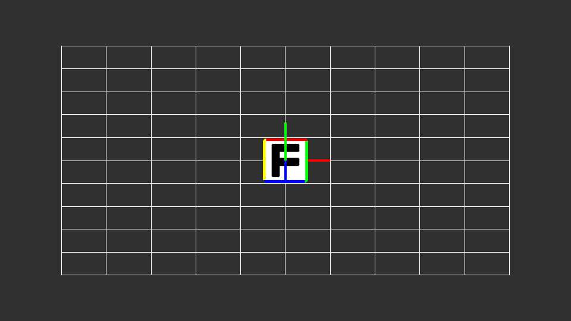

カメラタイプ
ここではカメラの種類を決める機能「カメラタイプ」について説明します。
概要
「カメラタイプ」はカメラの種類をパースのかかる「パースペクティブ」とパースのない「オルソ」から選択する機能です。
以下は  の概要です。
の概要です。
カメラタイプ
カメラのタイプを以下のプリセットから選択します。
|
パースペクティブ
|
透視射影カメラです。画角により被写体にパース（奥行きによる遠近感）がかかるカメラです。 |
|
オルソ
|
正射影カメラです。画角により、被写体にパースがかからないカメラです。 |
設定例
以下は「カメラタイプ」の設定を切り替えた時の比較画像です。
| パースペクティブ |
オルソ |

|

|